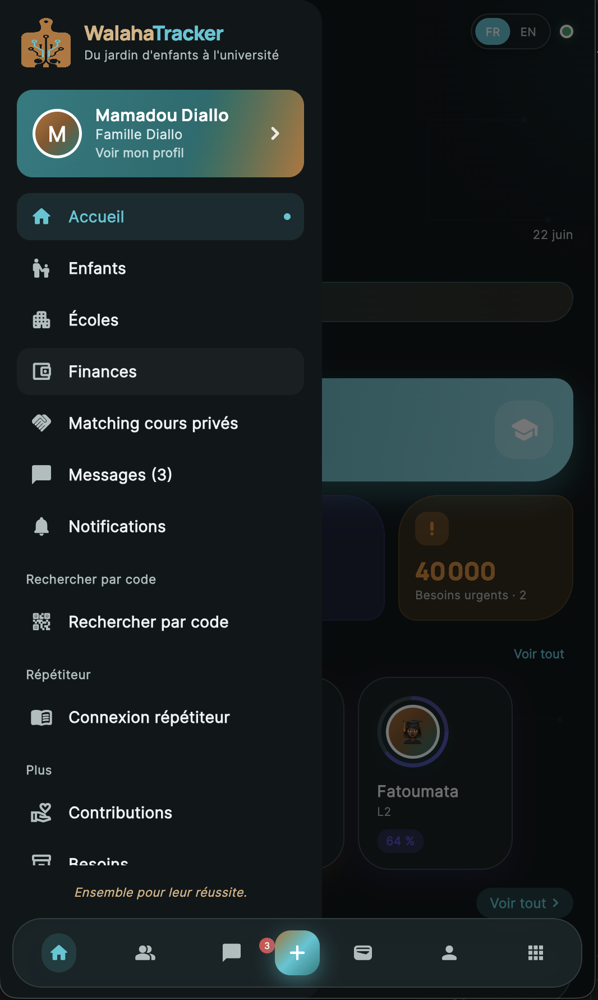

Informations perdues
Les bulletins, messages et annonces ne sont pas toujours faciles à retrouver.
Bulletins, frais en FCFA, messages et suivi des enfants — tout dans une seule application mobile.

« Enfin une app où je vois les bulletins et les frais de mes trois enfants sans chercher dans WhatsApp. »
« On peut informer les parents plus facilement. Les messages ne se perdent plus dans les groupes. »
« Mes élèves et leurs parents me contactent directement. Je partage les devoirs en PDF dans l’app. »
Dans beaucoup de familles, les informations scolaires circulent encore par appels, papiers, messages WhatsApp ou échanges informels.
Les bulletins, messages et annonces ne sont pas toujours faciles à retrouver.
Les échanges entre parents, école et répétiteurs sont souvent dispersés.
Les frais scolaires en FCFA sont parfois suivis sur papier ou par messages.
Les parents ne savent pas toujours ce qui se passe réellement à l’école.
Moins de désordre. Plus de visibilité. Une meilleure collaboration autour de chaque enfant.
Cliquez sur un pilier pour voir l’écran correspondant dans l’aperçu interactif.
WalahaTracker regroupe bulletins, frais en FCFA, messages et suivi des enfants dans une application claire et agréable.
Menu & tableau de bord
WalahaTracker aide les écoles à communiquer avec les familles, partager les bulletins et suivre les frais scolaires en FCFA.
Suivez la scolarité de vos enfants à Bamako, Tombouctou ou ailleurs — bulletins, frais et messages au même endroit.
Présentez vos services, liez-vous aux enfants que vous suivez et échangez avec les familles dans un espace dédié.
Rejoignez les familles et écoles pilotes à Bamako, Tombouctou et au-delà. Testez l’application et aidez-nous à la construire pour le Mali.
École, parent ou répétiteur — laissez vos informations pour rejoindre la bêta au Mali.
Nous contacter sur WhatsApp